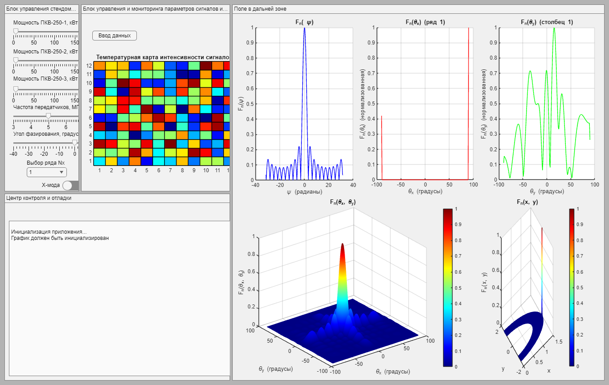

classdef DipoleMatrixApp7 < matlab.apps.AppBase
properties (Access = public)
UIFigure matlab.ui.Figure
GridLayout matlab.ui.container.GridLayout
PowerSlider1 matlab.ui.control.Slider
PowerSlider2 matlab.ui.control.Slider
PowerSlider3 matlab.ui.control.Slider
FrequencySlider matlab.ui.control.Slider
ThetaSlider matlab.ui.control.Slider
RowDropDown matlab.ui.control.DropDown
ColumnDropDown matlab.ui.control.DropDown
PowerLabel1 matlab.ui.control.Label
PowerLabel2 matlab.ui.control.Label
PowerLabel3 matlab.ui.control.Label
FrequencyLabel matlab.ui.control.Label
ThetaLabel matlab.ui.control.Label
RowLabel matlab.ui.control.Label
ColumnLabel matlab.ui.control.Label
ModeSwitch matlab.ui.control.Switch
UIAxes matlab.ui.control.UIAxes
Matrix
DirectionButton matlab.ui.control.UIControl
DNPButton matlab.ui.control.UIControl
TextArea matlab.ui.control.TextArea
AxesPsi matlab.ui.control.UIAxes
AxesThetaX matlab.ui.control.UIAxes
AxesThetaY matlab.ui.control.UIAxes
AxesTheta3D matlab.ui.control.UIAxes
AxesXY matlab.ui.control.UIAxes
SelectedRow double
SelectedColumn double
end
methods (Access = private)
function startupFcn(app)
app.appendMessage('Инициализация приложения...');
app.SelectedRow = 1;
app.SelectedColumn = 1;
app.Matrix = initializeMatrix(app, [300, 300, 300], app.FrequencySlider.Value, app.ThetaSlider.Value);
updatePlot(app);
app.appendMessage('График должен быть инициализирован');
app.appendMessage(['']);
updateDirectionPlots(app);
end
function appendMessage(app, message)
if isempty(app.TextArea.Value)
app.TextArea.Value = {message};
else
app.TextArea.Value = [app.TextArea.Value; {message}];
end
end
function matrix = initializeMatrix(app, powers, frequency, theta)
matrix = zeros(12, 12, 2);
c = 3e8;
dipole_length = 34;
resonant_frequency = c / (2 * dipole_length);
resonant_frequency_MHz = resonant_frequency / 1e6;
bandwidth = 5.0;
amplitude_factor = exp(-((frequency - resonant_frequency_MHz) / bandwidth).^2);
dx = 0.5;
wavelength = c / (frequency * 1e6);
dx_meters = dx * wavelength;
base_matrix = zeros(12, 12, 2, 'like', 1i);
amplitude_variation = 1 + 0.1 * rand(12, 4);
phase_base = 2 * pi * frequency * (dipole_length / c) * rand(12, 4);
if strcmp(app.ModeSwitch.Value, 'X-мода')
phase_1 = phase_base;
phase_2 = phase_base;
else
phase_1 = phase_base;
phase_2 = phase_base + pi/2;
end
base_matrix(:, 1:4, 1) = sqrt(powers(1)) * amplitude_factor * amplitude_variation .* exp(1i * phase_1);
base_matrix(:, 1:4, 2) = sqrt(powers(1)) * amplitude_factor * amplitude_variation .* exp(1i * phase_2);
amplitude_variation = 1 + 0.1 * rand(12, 4);
phase_base = 2 * pi * frequency * (dipole_length / c) * rand(12, 4);
if strcmp(app.ModeSwitch.Value, 'X-мода')
phase_1 = phase_base;
phase_2 = phase_base;
else
phase_1 = phase_base;
phase_2 = phase_base + pi/2;
end
base_matrix(:, 5:8, 1) = sqrt(powers(2)) * amplitude_factor * amplitude_variation .* exp(1i * phase_1);
base_matrix(:, 5:8, 2) = sqrt(powers(2)) * amplitude_factor * amplitude_variation .* exp(1i * phase_2);
amplitude_variation = 1 + 0.1 * rand(12, 4);
phase_base = 2 * pi * frequency * (dipole_length / c) * rand(12, 4);
if strcmp(app.ModeSwitch.Value, 'X-мода')
phase_1 = phase_base;
phase_2 = phase_base;
else
phase_1 = phase_base;
phase_2 = phase_base + pi/2;
end
base_matrix(:, 9:12, 1) = sqrt(powers(3)) * amplitude_factor * amplitude_variation .* exp(1i * phase_1);
base_matrix(:, 9:12, 2) = sqrt(powers(3)) * amplitude_factor * amplitude_variation .* exp(1i * phase_2);
for i = 1:12
for j = 1:12
for dipole_idx = 1:2
if abs(base_matrix(i, j, dipole_idx)) > 0
coupling_effect = 0;
for m = 1:12
for n = 1:12
for other_dipole_idx = 1:2
if (m ~= i || n ~= j || dipole_idx ~= other_dipole_idx) && abs(base_matrix(m, n, other_dipole_idx)) > 0
dist = sqrt(((i-m)*dx_meters)^2 + ((j-n)*dx_meters)^2);
if dist > 0
coupling = (1/dist) * exp(1i * (2 * pi / wavelength) * dist);
coupling_effect = coupling_effect + coupling * base_matrix(m, n, other_dipole_idx);
end
end
end
end
end
matrix(i, j, dipole_idx) = base_matrix(i, j, dipole_idx) + 0.1 * coupling_effect;
end
end
end
end
end
function [psi_base, Fn_psi, theta_x, Fn_theta_x, theta_y, Fn_theta_y, theta_x_3d, theta_y_3d, Fn_3d, x_3d, y_3d, Fn_xy] = computeAmplitudePattern(app, frequency)
Nx_total = 12;
Ny_total = 12;
Nx = app.SelectedRow;
Ny = app.SelectedColumn;
d = 25;
c = 3e8;
ksi = 1;
theta_slider = deg2rad(app.ThetaSlider.Value);
theta_offset = 34;
f = frequency * 1e6;
wavelength = c / f;
k = 2 * pi / wavelength;
psi_0 = (Nx_total * k * d / 2) * cos(theta_slider + theta_offset - ksi);
psi_base = linspace(-10*pi, 10*pi, 1000);
psi_shifted = psi_base + psi_0;
Fn_psi = abs(sin(psi_shifted) ./ (Nx_total * sin(psi_shifted / Nx_total)));
Fn_psi(isnan(Fn_psi) | isinf(Fn_psi)) = 1;
theta_x_3d = linspace(-pi/2, pi/2, 300);
theta_y_3d = linspace(-pi/2, pi/2, 300);
[theta_x_3d, theta_y_3d] = meshgrid(theta_x_3d, theta_y_3d);
Fn_3d = zeros(size(theta_x_3d));
x_positions = d * ((1:Nx_total) - (Nx_total + 1)/2);
y_positions = d * ((1:Ny_total) - (Ny_total + 1)/2);
for i = 1:Nx_total
for j = 1:Ny_total
for dipole_idx = 1:2
A_ij = abs(app.Matrix(i, j, dipole_idx));
phi_ij = angle(app.Matrix(i, j, dipole_idx));
dipole_angle = (dipole_idx == 1) * pi/4 + (dipole_idx == 2) * (pi/4 + pi/2);
phase = k * (x_positions(i) * cos(theta_x_3d + theta_offset - theta_slider - ksi) + ...
y_positions(j) * cos(theta_y_3d + theta_offset - ksi));
directional_factor = cos(dipole_angle - atan2(cos(theta_y_3d), cos(theta_x_3d)));
Fn_3d = Fn_3d + A_ij * directional_factor .* exp(1i * (phi_ij + phase));
end
end
end
Fn_3d = abs(Fn_3d);
max_Fn_3d = max(Fn_3d(:));
if max_Fn_3d > 0
Fn_3d = Fn_3d / max_Fn_3d;
else
Fn_3d = zeros(size(Fn_3d));
end
theta_x = linspace(-pi/2, pi/2, 181);
nx_idx = round(1 + (Nx - 1) * (100 - 1) / (12 - 1));
nx_idx = max(1, min(100, nx_idx));
Fn_theta_x = interp1(theta_x_3d(1, :), Fn_3d(nx_idx, :), theta_x, 'linear');
Fn_theta_x(isnan(Fn_theta_x)) = 0;
max_Fn_theta_x = max(Fn_theta_x(:));
if max_Fn_theta_x > 0
Fn_theta_x = Fn_theta_x / max_Fn_theta_x;
else
Fn_theta_x = zeros(size(Fn_theta_x));
end
theta_y = linspace(-pi/2, pi/2, 181);
ny_idx = round(1 + (Ny - 1) * (100 - 1) / (12 - 1));
ny_idx = max(1, min(100, ny_idx));
Fn_theta_y = interp1(theta_y_3d(:, 1), Fn_3d(:, ny_idx), theta_y, 'linear');
Fn_theta_y(isnan(Fn_theta_y)) = 0;
max_Fn_theta_y = max(Fn_theta_y(:));
if max_Fn_theta_y > 0
Fn_theta_y = Fn_theta_y / max_Fn_theta_y;
else
Fn_theta_y = zeros(size(Fn_theta_y));
end
R = 1;
r = 0.5;
x_3d = (R + r * cos(theta_y_3d)) .* cos(theta_x_3d);
y_3d = (R + r * cos(theta_y_3d)) .* sin(theta_x_3d);
jacobian = 1 ./ (sin(theta_x_3d).^2 .* sin(theta_y_3d).^2);
jacobian(abs(jacobian) < eps) = eps;
Fn_xy = Fn_3d .* jacobian;
Fn_xy(isnan(Fn_xy)) = 0;
max_Fn_xy = max(Fn_xy(:));
if max_Fn_xy > 0
Fn_xy = Fn_xy / max_Fn_xy;
else
Fn_xy = zeros(size(Fn_xy));
end
mask = (abs(x_3d) <= 5) & (abs(y_3d) <= 5);
x_3d(~mask) = NaN;
y_3d(~mask) = NaN;
Fn_xy(~mask) = NaN;
end
function updatePlot(app)
amplitude = mean(abs(app.Matrix), 3);
amplitude = flipud(amplitude);
if isempty(app.UIAxes) || ~isvalid(app.UIAxes)
app.UIAxes = uiaxes(app.GridLayout);
app.UIAxes.Layout.Row = 1;
app.UIAxes.Layout.Column = 2;
end
cla(app.UIAxes);
hh = image(app.UIAxes, amplitude, 'CDataMapping', 'scaled');
colormap(app.UIAxes, 'jet');
colorbar(app.UIAxes);
axis(app.UIAxes, [0.5 12.5 0.5 12.5]);
xticks(app.UIAxes, 1:12);
yticks(app.UIAxes, 1:12);
yticklabels(app.UIAxes, string(12:-1:1));
hold(app.UIAxes, 'on');
for k = 0.5:1:13
plot(app.UIAxes, [k k], [0 13], 'k-', 'LineWidth', 0.5);
plot(app.UIAxes, [0 13], [k k], 'k-', 'LineWidth', 0.5);
end
hold(app.UIAxes, 'off');
title(app.UIAxes, 'Температурная карта интенсивности сигналов');
set(hh, 'ButtonDownFcn', @(src, event) app.ElementClicked(src, event));
drawnow;
end
function ElementClicked(app, src, ~)
clicked_point = app.UIAxes.CurrentPoint;
x = round(clicked_point(1, 1));
y = round(clicked_point(1, 2));
if x >= 1 && x <= 12 && y >= 1 && y <= 12
app.EditElementWindow(y, x);
end
end
function EditElementWindow(app, i, j)
editFig = uifigure('Name', ['Редактирование элемента (' num2str(i) ',' num2str(j) ')'], ...
'Position', [200 200 400 300], ...
'CloseRequestFcn', @(src, event) delete(src));
editGrid = uigridlayout(editFig, [5 2]);
editGrid.RowHeight = {30, 30, 30, 30, 30};
editGrid.ColumnWidth = {'1x', '1x'};
complex1 = app.Matrix(i, j, 1);
complex2 = app.Matrix(i, j, 2);
amp1 = abs(complex1);
phase1 = angle(complex1) * 180 / pi;
amp2 = abs(complex2);
phase2 = angle(complex2) * 180 / pi;
label1 = uilabel(editGrid, 'Text', 'Диполь 1: Амплитуда', 'HorizontalAlignment', 'right');
label1.Layout.Row = 1;
label1.Layout.Column = 1;
label2 = uilabel(editGrid, 'Text', 'Диполь 1: Фаза (градусы)', 'HorizontalAlignment', 'right');
label2.Layout.Row = 2;
label2.Layout.Column = 1;
ampField1 = uieditfield(editGrid, 'numeric', 'Value', amp1);
ampField1.Layout.Row = 1;
ampField1.Layout.Column = 2;
phaseField1 = uieditfield(editGrid, 'numeric', 'Value', phase1);
phaseField1.Layout.Row = 2;
phaseField1.Layout.Column = 2;
label3 = uilabel(editGrid, 'Text', 'Диполь 2: Амплитуда', 'HorizontalAlignment', 'right');
label3.Layout.Row = 3;
label3.Layout.Column = 1;
label4 = uilabel(editGrid, 'Text', 'Диполь 2: Фаза (градусы)', 'HorizontalAlignment', 'right');
label4.Layout.Row = 4;
label4.Layout.Column = 1;
ampField2 = uieditfield(editGrid, 'numeric', 'Value', amp2);
ampField2.Layout.Row = 3;
ampField2.Layout.Column = 2;
phaseField2 = uieditfield(editGrid, 'numeric', 'Value', phase2);
phaseField2.Layout.Row = 4;
phaseField2.Layout.Column = 2;
saveButton = uibutton(editGrid, 'Text', 'Сохранить');
saveButton.Layout.Row = 5;
saveButton.Layout.Column = [1 2];
saveButton.ButtonPushedFcn = @(src, event) SaveElement(app, i, j, ampField1, phaseField1, ampField2, phaseField2, editFig);
end
function SaveElement(app, i, j, ampField1, phaseField1, ampField2, phaseField2, editFig)
amp1 = ampField1.Value;
phase1 = deg2rad(phaseField1.Value);
amp2 = ampField2.Value;
phase2 = deg2rad(phaseField2.Value);
app.Matrix(i, j, 1) = amp1 * exp(1i * phase1);
app.Matrix(i, j, 2) = amp2 * exp(1i * phase2);
app.updatePlot();
app.updateDirectionPlots();
delete(editFig);
app.appendMessage(['Элемент (' num2str(i) ',' num2str(j) ') обновлён']);
end
function OpenMatrixEditor(app)
matrixFig = uifigure('Name', 'Редактирование матрицы', ...
'Position', [200 200 800 600], ...
'CloseRequestFcn', @(src, event) delete(src));
matrixGrid = uigridlayout(matrixFig, [2 1]);
matrixGrid.RowHeight = {'1x', 30};
matrixGrid.ColumnWidth = {'1x'};
numRows = 12 * 12;
tableData = cell(numRows, 6);
rowIdx = 1;
for j = 1:12
for i = 1:12
tableData{rowIdx, 1} = j;
tableData{rowIdx, 2} = i;
complex1 = app.Matrix(i, j, 1);
tableData{rowIdx, 3} = abs(complex1);
tableData{rowIdx, 4} = angle(complex1) * 180 / pi;
complex2 = app.Matrix(i, j, 2);
tableData{rowIdx, 5} = abs(complex2);
tableData{rowIdx, 6} = angle(complex2) * 180 / pi;
rowIdx = rowIdx + 1;
end
end
matrixTable = uitable(matrixGrid);
matrixTable.Data = tableData;
matrixTable.ColumnName = {'Столбец', 'Ряд', 'Диполь 1: Амплитуда', 'Диполь 1: Фаза (град)', 'Диполь 2: Амплитуда', 'Диполь 2: Фаза (град)'};
matrixTable.ColumnEditable = [false false true true true true];
matrixTable.ColumnFormat = {'numeric', 'numeric', 'numeric', 'numeric', 'numeric', 'numeric'};
matrixTable.Layout.Row = 1;
matrixTable.Layout.Column = 1;
saveButton = uibutton(matrixGrid, 'Text', 'Сохранить');
saveButton.Layout.Row = 2;
saveButton.Layout.Column = 1;
saveButton.ButtonPushedFcn = @(src, event) SaveMatrixFromTable(app, matrixTable, matrixFig);
end
function SaveMatrixFromTable(app, matrixTable, matrixFig)
tableData = matrixTable.Data;
for rowIdx = 1:size(tableData, 1)
j = tableData{rowIdx, 1};
i = tableData{rowIdx, 2};
amp1 = tableData{rowIdx, 3};
phase1 = deg2rad(tableData{rowIdx, 4});
app.Matrix(i, j, 1) = amp1 * exp(1i * phase1);
amp2 = tableData{rowIdx, 5};
phase2 = deg2rad(tableData{rowIdx, 6});
app.Matrix(i, j, 2) = amp2 * exp(1i * phase2);
end
app.updatePlot();
app.updateDirectionPlots();
delete(matrixFig);
app.appendMessage('Матрица обновлена через таблицу');
end
function updateDirectionPlots(app)
frequency = app.FrequencySlider.Value;
[psi_base, Fn_psi, theta_x, Fn_theta_x, theta_y, Fn_theta_y, theta_x_3d, theta_y_3d, Fn_3d, x_3d, y_3d, Fn_xy] = computeAmplitudePattern(app, frequency);
cla(app.AxesPsi);
plot(app.AxesPsi, psi_base, Fn_psi, 'b-');
xlabel(app.AxesPsi, '\psi (радианы)');
ylabel(app.AxesPsi, 'F_n(\psi)');
title(app.AxesPsi, 'F_n( \psi)');
grid(app.AxesPsi, 'on')
cla(app.AxesThetaX);
plot(app.AxesThetaX, rad2deg(theta_x), Fn_theta_x, 'r-');
xlabel(app.AxesThetaX, '\theta_x (градусы)');
ylabel(app.AxesThetaX, 'F_n(\theta_x) (нормализованная)');
title(app.AxesThetaX, ['F_n(\theta_x) (ряд ' num2str(app.SelectedRow) ')']);
grid(app.AxesThetaX, 'on');
cla(app.AxesThetaY);
plot(app.AxesThetaY, rad2deg(theta_y), Fn_theta_y, 'g-');
xlabel(app.AxesThetaY, '\theta_y (градусы)');
ylabel(app.AxesThetaY, 'F_n(\theta_y) (нормализованная)');
title(app.AxesThetaY, ['F_n(\theta_y) (столбец ' num2str(app.SelectedColumn) ')']);
grid(app.AxesThetaY, 'on');
cla(app.AxesTheta3D);
surf(app.AxesTheta3D, rad2deg(theta_x_3d), rad2deg(theta_y_3d), Fn_3d, 'EdgeColor', 'interp');
xlabel(app.AxesTheta3D, '\theta_x (градусы)');
ylabel(app.AxesTheta3D, '\theta_y (градусы)');
zlabel(app.AxesTheta3D, 'F_n(\theta_x, \theta_y)');
title(app.AxesTheta3D, 'F_n(\theta_x, \theta_y)');
colormap(app.AxesTheta3D, 'jet');
colorbar(app.AxesTheta3D);
grid(app.AxesTheta3D, 'on');
cla(app.AxesXY);
surf(app.AxesXY, x_3d, y_3d, Fn_xy, 'EdgeColor', 'interp');
xlabel(app.AxesXY, 'x');
ylabel(app.AxesXY, 'y');
zlabel(app.AxesXY, 'F_n(x, y)');
title(app.AxesXY, 'F_n(x, y)');
colormap(app.AxesXY, 'jet');
colorbar(app.AxesXY);
grid(app.AxesXY, 'on');
drawnow;
end
function PowerSlider1ValueChanged(app, ~)
powers = [app.PowerSlider1.Value, app.PowerSlider2.Value, app.PowerSlider3.Value];
frequency = app.FrequencySlider.Value;
theta = app.ThetaSlider.Value;
app.PowerLabel1.Text = ['Мощность ПКВ-250-1 = ' num2str(powers(1), '%.2f') ' кВт'];
app.Matrix = initializeMatrix(app, powers, frequency, theta);
updatePlot(app);
app.appendMessage(['Изменена мощность ПКВ-250-1 на ' num2str(powers(1), '%.2f') ' кВт']);
updateDirectionPlots(app);
end
function PowerSlider2ValueChanged(app, ~)
powers = [app.PowerSlider1.Value, app.PowerSlider2.Value, app.PowerSlider3.Value];
frequency = app.FrequencySlider.Value;
theta = app.ThetaSlider.Value;
app.PowerLabel2.Text = ['Мощность ПКВ-250-2 = ' num2str(powers(2), '%.2f') ' кВт'];
app.Matrix = initializeMatrix(app, powers, frequency, theta);
updatePlot(app);
app.appendMessage(['Изменена мощность ПКВ-250-2 на ' num2str(powers(2), '%.2f') ' кВт']);
updateDirectionPlots(app);
end
function PowerSlider3ValueChanged(app, ~)
powers = [app.PowerSlider1.Value, app.PowerSlider2.Value, app.PowerSlider3.Value];
frequency = app.FrequencySlider.Value;
theta = app.ThetaSlider.Value;
app.PowerLabel3.Text = ['Мощность ПКВ-250-3 = ' num2str(powers(3), '%.2f') ' кВт'];
app.Matrix = initializeMatrix(app, powers, frequency, theta);
updatePlot(app);
app.appendMessage(['Изменена мощность ПКВ-250-3 на ' num2str(powers(3), '%.2f') ' кВт']);
updateDirectionPlots(app);
end
function FrequencySliderValueChanged(app, ~)
powers = [app.PowerSlider1.Value, app.PowerSlider2.Value, app.PowerSlider3.Value];
frequency = app.FrequencySlider.Value;
theta = app.ThetaSlider.Value;
app.FrequencyLabel.Text = ['Частота передатчиков = ' num2str(frequency, '%.2f') ' МГц'];
app.Matrix = initializeMatrix(app, powers, frequency, theta);
updatePlot(app);
c = 3e8;
f = frequency * 1e6;
wavelength = c / f;
k = 2 * pi / wavelength;
app.appendMessage(['']);
app.appendMessage(['Изменена частота на ' num2str(frequency, '%.2f') ' МГц']);
app.appendMessage(['Длина волны: ' num2str(wavelength) ' м']);
app.appendMessage(['Волновое число k: ' num2str(k) ' радиан/м']);
app.appendMessage(['']);
updateDirectionPlots(app);
end
function ThetaSliderValueChanged(app, ~)
powers = [app.PowerSlider1.Value, app.PowerSlider2.Value, app.PowerSlider3.Value];
frequency = app.FrequencySlider.Value;
theta = app.ThetaSlider.Value;
app.appendMessage(['']);
app.ThetaLabel.Text = ['Угол фазирования = ' num2str(theta, '%.2f') ' градусов'];
app.Matrix = initializeMatrix(app, powers, frequency, theta);
updatePlot(app);
app.appendMessage(['Изменён угол фазирования θ на значение ' num2str(theta, '%.2f') ' градусов']);
app.appendMessage(['']);
updateDirectionPlots(app);
end
function RowDropDownValueChanged(app, ~)
app.SelectedRow = str2double(app.RowDropDown.Value);
app.appendMessage(['']);
app.appendMessage(['Выбран ряд Nx = ' num2str(app.SelectedRow)]);
app.appendMessage(['']);
updateDirectionPlots(app);
end
function ColumnDropDownValueChanged(app, ~)
app.SelectedColumn = str2double(app.ColumnDropDown.Value);
app.appendMessage(['']);
app.appendMessage(['Выбран столбец Ny = ' num2str(app.SelectedColumn)]);
updateDirectionPlots(app);
end
function DirectionButtonPushed(app, ~)
app.appendMessage('Запрос параметров ЭМП');
frequency = app.FrequencySlider.Value;
powers = [app.PowerSlider1.Value, app.PowerSlider2.Value, app.PowerSlider3.Value];
c = 3e8;
f = frequency * 1e6;
wavelength = c / f;
k = 2 * pi / wavelength;
[~, ~, ~, ~, ~, ~, ~, ~, Fn_3d, ~, ~, ~] = computeAmplitudePattern(app, frequency);
max_intensity_dB = 10 * log10(max(Fn_3d(:)));
app.appendMessage(['Мощность ПКВ-250-1: ' num2str(powers(1)) ' кВт']);
app.appendMessage(['Мощность ПКВ-250-2: ' num2str(powers(2)) ' кВт']);
app.appendMessage(['Мощность ПКВ-250-3: ' num2str(powers(3)) ' кВт']);
app.appendMessage(['']);
app.appendMessage(['Частота излучения: ' num2str(frequency) ' МГц']);
app.appendMessage(['Длина волны: ' num2str(wavelength) ' м']);
app.appendMessage(['Волновое число k: ' num2str(k) ' радиан/м']);
app.appendMessage(['']);
app.appendMessage(['Максимум интенсивности в дальней зоне: ' num2str(max_intensity_dB) ' дБ']);
app.appendMessage(['']);
drawnow;
end
function ModeSwitchValueChanged(app, ~)
powers = [app.PowerSlider1.Value, app.PowerSlider2.Value, app.PowerSlider3.Value];
frequency = app.FrequencySlider.Value;
theta = app.ThetaSlider.Value;
app.appendMessage(['Изменён режим на ' app.ModeSwitch.Value]);
app.Matrix = initializeMatrix(app, powers, frequency, theta);
updatePlot(app);
updateDirectionPlots(app);
end
function DNPButtonPushed(app, ~)
app.appendMessage('Построение характеристик направленности...');
updateDirectionPlots(app);
end
end
methods (Access = public)
function app = DipoleMatrixApp7
app.UIFigure = uifigure('Name', 'Модель нагревного стенда СУРА');
app.UIFigure.Position = [100 100 1366 865];
app.GridLayout = uigridlayout(app.UIFigure, [2 3]);
app.GridLayout.RowHeight = {'1x', '1x'};
app.GridLayout.ColumnWidth = {'1x', '2x', '5x'};
app.GridLayout.RowSpacing = 5;
app.GridLayout.ColumnSpacing = 5;
app.GridLayout.BackgroundColor = [0.7 0.7 0.7];
controlsPanel = uipanel(app.GridLayout);
controlsPanel.Layout.Row = 1;
controlsPanel.Layout.Column = 1;
controlsPanel.Title = 'Блок управления стендом СУРА';
controlsPanel.BackgroundColor = [0.95 0.95 0.95];
app.PowerLabel1 = uilabel(controlsPanel);
app.PowerLabel1.Position = [20 360 200 22];
app.PowerLabel1.Text = 'Мощность ПКВ-250-1, кВт';
app.PowerSlider1 = uislider(controlsPanel);
app.PowerSlider1.Limits = [0 300];
app.PowerSlider1.Value = 6.25;
app.PowerSlider1.Position = [20 350 275 3];
app.PowerSlider1.MajorTicks = [0:50:300];
app.PowerSlider1.ValueChangedFcn = @(src, event) app.PowerSlider1ValueChanged;
app.PowerLabel2 = uilabel(controlsPanel);
app.PowerLabel2.Position = [20 295 200 22];
app.PowerLabel2.Text = 'Мощность ПКВ-250-2, кВт';
app.PowerSlider2 = uislider(controlsPanel);
app.PowerSlider2.Limits = [0 300];
app.PowerSlider2.Value = 6.25;
app.PowerSlider2.Position = [20 285 275 3];
app.PowerSlider2.MajorTicks = [0:50:300];
app.PowerSlider2.ValueChangedFcn = @(src, event) app.PowerSlider2ValueChanged;
app.PowerLabel3 = uilabel(controlsPanel);
app.PowerLabel3.Position = [20 230 200 30];
app.PowerLabel3.Text = 'Мощность ПКВ-250-3, кВт';
app.PowerSlider3 = uislider(controlsPanel);
app.PowerSlider3.Limits = [0 300];
app.PowerSlider3.Value = 6.25;
app.PowerSlider3.Position = [20 220 275 22];
app.PowerSlider3.MajorTicks = [0:50:300];
app.PowerSlider3.ValueChangedFcn = @(src, event) app.PowerSlider3ValueChanged;
app.FrequencyLabel = uilabel(controlsPanel);
app.FrequencyLabel.Position = [20 170 200 22];
app.FrequencyLabel.Text = 'Частота передатчиков, МГц';
app.FrequencySlider = uislider(controlsPanel);
app.FrequencySlider.Limits = [3 10];
app.FrequencySlider.Value = 5;
app.FrequencySlider.Position = [20 160 275 3];
app.FrequencySlider.MajorTicks = [3:1:10];
app.FrequencySlider.ValueChangedFcn = @(src, event) app.FrequencySliderValueChanged;
app.ThetaLabel = uilabel(controlsPanel);
app.ThetaLabel.Position = [20 110 200 22];
app.ThetaLabel.Text = 'Угол фазирования, градусы';
app.ThetaSlider = uislider(controlsPanel);
app.ThetaSlider.Limits = [-40 40];
app.ThetaSlider.Value = 0;
app.ThetaSlider.Position = [20 100 275 3];
app.ThetaSlider.MajorTicks = [-40:10:40];
app.ThetaSlider.ValueChangedFcn = @(src, event) app.ThetaSliderValueChanged;
app.RowLabel = uilabel(controlsPanel);
app.RowLabel.Position = [50 45 200 22];
app.RowLabel.Text = 'Выбор ряда Nx';
app.RowDropDown = uidropdown(controlsPanel);
app.RowDropDown.Items = string(1:12);
app.RowDropDown.Value = '1';
app.RowDropDown.Position = [50 25 90 22];
app.RowDropDown.ValueChangedFcn = @(src, event) app.RowDropDownValueChanged;
app.ColumnLabel = uilabel(controlsPanel);
app.ColumnLabel.Position = [170 45 200 22];
app.ColumnLabel.Text = 'Выбор столбца Ny';
app.ColumnDropDown = uidropdown(controlsPanel);
app.ColumnDropDown.Items = string(1:12);
app.ColumnDropDown.Value = '1';
app.ColumnDropDown.Position = [170 25 90 22];
app.ColumnDropDown.ValueChangedFcn = @(src, event) app.ColumnDropDownValueChanged;
app.ModeSwitch = uiswitch(controlsPanel, 'slider');
app.ModeSwitch.Position = [130 -5 90 22];
app.ModeSwitch.Items = {'X-мода', 'O-мода'};
app.ModeSwitch.Value = 'X-мода';
app.ModeSwitch.ValueChangedFcn = @(src, event) app.ModeSwitchValueChanged;
app.DirectionButton = uicontrol(controlsPanel, 'Style', 'pushbutton');
app.DirectionButton.String = 'Отладочный вывод ЭМП';
app.DirectionButton.Position = [20 -30 90 22];
app.DirectionButton.Callback = @(src, event) app.DirectionButtonPushed(app);
app.DNPButton = uicontrol(controlsPanel, 'Style', 'pushbutton');
app.DNPButton.String = 'Построение ДН';
app.DNPButton.Position = [130 -30 90 22];
app.DNPButton.Callback = @(src, event) app.DNPButtonPushed(app);
intensityPanel = uipanel(app.GridLayout);
intensityPanel.Layout.Row = 1;
intensityPanel.Layout.Column = 2;
intensityPanel.Title = 'Блок управления и мониторинга параметров сигналов излучателей';
intensityPanel.BackgroundColor = [0.95 0.95 0.95];
app.UIAxes = uiaxes(intensityPanel);
app.UIAxes.Position = [10 40 400 270];
dataButton = uibutton(intensityPanel, 'Text', 'Ввод данных');
dataButton.Position = [25 140 100 22];
dataButton.ButtonPushedFcn = @(src, event) app.OpenMatrixEditor();
debugPanel = uipanel(app.GridLayout);
debugPanel.Layout.Row = 2;
debugPanel.Layout.Column = [1 2];
debugPanel.Title = 'Центр контроля и отладки';
debugPanel.BackgroundColor = [0.95 0.95 0.95];
app.TextArea = uitextarea(debugPanel);
app.TextArea.Position = [10 10 580 150];
app.TextArea.Editable = 'off';
directionPanel = uipanel(app.GridLayout);
directionPanel.Layout.Row = [1 2];
directionPanel.Layout.Column = 3;
directionPanel.Title = 'Поле в дальней зоне';
directionPanel.BackgroundColor = [0.95 0.95 0.95];
directionGrid = uigridlayout(directionPanel, [2 3]);
directionGrid.RowHeight = {'1x', '1x'};
directionGrid.ColumnWidth = {'1x', '1x', '1x'};
directionGrid.RowSpacing = 5;
directionGrid.ColumnSpacing = 5;
app.AxesPsi = uiaxes(directionGrid);
app.AxesPsi.Layout.Row = 1;
app.AxesPsi.Layout.Column = 1;
app.AxesThetaX = uiaxes(directionGrid);
app.AxesThetaX.Layout.Row = 1;
app.AxesThetaX.Layout.Column = 2;
app.AxesThetaY = uiaxes(directionGrid);
app.AxesThetaY.Layout.Row = 1;
app.AxesThetaY.Layout.Column = 3;
app.AxesTheta3D = uiaxes(directionGrid);
app.AxesTheta3D.Layout.Row = 2;
app.AxesTheta3D.Layout.Column = [1 2];
app.AxesXY = uiaxes(directionGrid);
app.AxesXY.Layout.Row = 2;
app.AxesXY.Layout.Column = 3;
startupFcn(app);
end
end
methods (Static)
function run()
app = DipoleMatrixApp7;
disp('Интерфейс запущен.');
end
end
end
ans =
DipoleMatrixApp7 with properties:
UIFigure: [1×1 Figure]
GridLayout: [1×1 GridLayout]
PowerSlider1: [1×1 Slider]
PowerSlider2: [1×1 Slider]
PowerSlider3: [1×1 Slider]
FrequencySlider: [1×1 Slider]
ThetaSlider: [1×1 Slider]
RowDropDown: [1×1 DropDown]
ColumnDropDown: [1×1 DropDown]
PowerLabel1: [1×1 Label]
PowerLabel2: [1×1 Label]
PowerLabel3: [1×1 Label]
FrequencyLabel: [1×1 Label]
ThetaLabel: [1×1 Label]
RowLabel: [1×1 Label]
ColumnLabel: [1×1 Label]
ModeSwitch: [1×1 Switch]
UIAxes: [1×1 UIAxes]
Matrix: [12×12×2 double]
DirectionButton: [1×1 UIControl]
DNPButton: [1×1 UIControl]
TextArea: [1×1 TextArea]
AxesPsi: [1×1 UIAxes]
AxesThetaX: [1×1 UIAxes]
AxesThetaY: [1×1 UIAxes]
AxesTheta3D: [1×1 UIAxes]
AxesXY: [1×1 UIAxes]
SelectedRow: 1
SelectedColumn: 1
